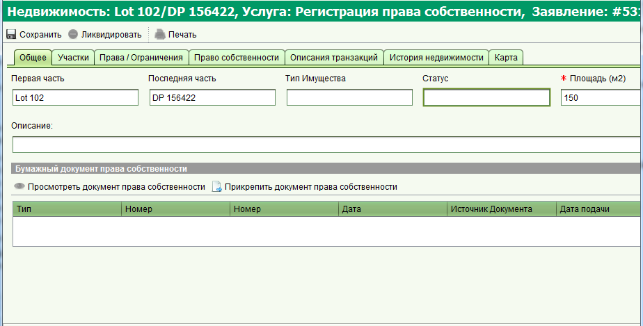
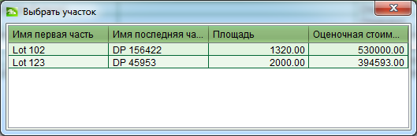

Форма недвижимости позволяет создать новую запись о недвижимости или отредактировать существующую. Информация о недвижимости может быть открыта для просмотра из результатов поиска на форме поиска недвижимости. Для изменения данных недвижимости и ее прав, необходимо сначала подать соответствующее заявление содержащие услуги по регистрации прав собственности, ограничения или их изменения/прекращения. После того как заявление будет назначено на исполнение и запущена соответствующая услуга, появится форма недвижимости. Смотрите раздел справки "Доступные операции" для описания регистрации различных прав.

Недвижимость в контексте Land Administration Domain Model (LADM - драфт стандарта ISO 19152) является базовой административной единицой (также известной как BA Unit). В соответствии с LADM, BA Unit имеет уникальную идентификацию и связывает земельные участки с правами, ограничениями и ответственностью (RRR), зарегистрированных на них. Также объект недвижимости связывает права и ограничения с индивидуальными лицами или группами лиц (организаций), являющимися обладателями этих прав. Следующая информация может быть сохранена для объекта недвижимости:
Вкладка "Права/Ограничения" отображает общую информацию обо всех правах и ограничениях в независимости от их статуса. Права могут иметь статусы "текущий" (активный), "на исполнении" (временный), "предыдущий" (предыдущее состояния права) и "история" (прекращенное). Для получения более подробной информации о праве, выделите его в списке и нажмите кнопку "Просмотреть". В зависимости от выбранного права, будет открыта соответствующая форма, которая включает общую информацию о регистрации права и его документы, а также специфичную информацию, относящуюся к выбранному типу права. При помощи других кнопок панели инструментов, вы можете создавать, изменять и прекращать права. Доступность данных кнопок будет определяться услугой в заявление, на основе которой вы вносите изменения. Стоит отметить, что кнопки "Редактировать" и "Удалить" доступны для прав со статусом "на исполнение" (которые еще не одобрены), в то время как кнопки "Изменить" и "Прекратить" применимы к правам с текущим статусом и ведут к изменению текущего права или его прекращению. Также на вкладке "Права/Ограничения" отображается история прав, информацию о каждом из которых можно просмотреть выбрав и нажав кнопку "Просмотреть".
SOLA позволяет добавлять несколько объектов недвижимого имущества в одно заявление. В этом случае при запуске услуги, касающейся создания или изменения недвижимости, появится окно выбора объекта недвижимости для которого будет открыта форма недвижимости. При одинарном щелчке, объект будет выбрана и открыта форма. В последствии, если вы сохраните изменения на форме недвижимости и вновь запустите услугу, будет автоматически открыт созданный/измененный объект недвижимости, без промежуточной формы выбора.
Все изменения, которые производятся с недвижимостью, в частности изменение прав, остаются временными до того момента, как заявление, на основе которого были сделаны эти изменения, будет одобрено. Для одобрения заявления, вам необходимо завершить все услуги и одобрить заявление через выпадающий список "Действия по заявлению", выбрав пункт "Одобрить".
При разделении или объединении объектов недвижимого имущества, они должны быть ликвидированы в системе и прекращены все права, связанные с ними. Для ликвидации недвижимости, необходимо создать заявление с услугой "Прекращение права собственности" и объектом недвижимости, который должен быть ликвидирован. При запуске данной услуги на форме недвижимости будет активна кнопка "Ликвидировать". Нажмите ее, сохраните изменения и одобрите заявление для подтверждения ликвидации объекта.
Смотрите также: